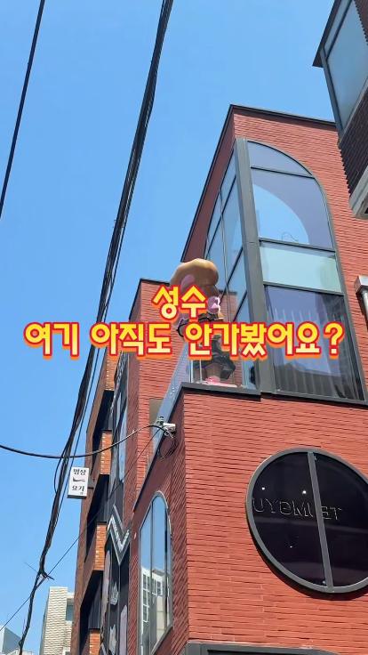
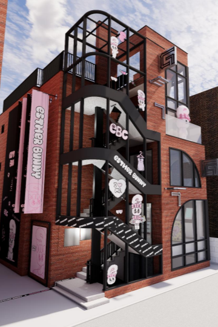

샤오홍슈 10건,
이렇게 만듭니다
10건 전부 성수 아뜰리에를 직접 방문해 콘텐츠를 발행하고,
오프라인 방문 유도와 신제품 소개에 초점을 맞춥니다.
A 콘텐츠 — 브이로그형
5
틈결 방문을 처음부터 끝까지 한 흐름으로 자연스럽게
B 콘텐츠 — 성수 팝업 TOP3형
5
다른 브랜드와 함께 묶어 소개하며 틈결을 노출
여기에 더해 길안내 3건
10건 중 3건에는 찾아오는 길을 화면에 담습니다.
콘텐츠 예시

1
2
3
1
위치 핀 + 실제 주소 — 매장명과 도로명 주소
2
지역 해시태그 — #서울여행 #서울필수코스
3
“주소 어디예요?” 댓글 유도
틈결 × SIRIAI01 / 03
A 콘텐츠
브이로그형 5건
성수 아뜰리에에 방문해 브이로그 형태로 자연스러운 콘텐츠를 발행합니다.
아래 5건은 예시입니다.

📍 길안내 포함
01
Video
도착 — 성수역에서 문 앞까지
찾아가는 길부터 브이로그를 시작합니다. 처음 오는 사람도 따라올 수 있게.
 02
02
Video
공간 투어 — 층마다 둘러봅니다
들어와서 한 바퀴 도는 흐름. 머물고 싶은 공간이라는 게 그대로 보입니다.
 03
03
Video
신제품 첫 대면 — 매장에서 처음 봅니다
진열대에서 신제품을 처음 만나는 순간. 개봉 리액션을 매장에서.
 04
04
Video
시착·체험 — 골라서 입어봅니다
고르고 착용하는 장면까지. “가면 해볼 수 있다”가 눈에 보입니다.
05
Image
구매 후 데일리 — 사 온 걸 씁니다
브이로그의 마지막은 집. 사 온 걸 실제로 쓰는 후기로 마무리.
틈결 × SIRIAI02 / 03
B 콘텐츠
성수 팝업 TOP3형 5건
“성수 팝업 TOP3” 과 같이 검색·저장에 유리한 형태로 콘텐츠를 발행합니다.
아래 5건은 예시입니다.

📍 길안내 포함
06
Image
성수 팝업 TOP3 — 틈결을 1번으로
성수 팝업을 묶어 소개하고 1번 스팟에 틈결을 놓습니다.
틈결 아뜰리에
성수 카페
편집숍
서울숲
📍 길안내 포함
07
Image
성수 하루 코스 — 틈결부터 시작
하루 코스로 묶어 저장을 유도합니다. 첫 스팟은 틈결.
 08
08
Image
성수 포토스팟 TOP3 — 틈결 포함
사진 잘 나오는 곳을 묶고 그 안에 틈결. 저장이 가장 잘 되는 유형.
서울 성수
에서만
삽니다
에서만
삽니다
전 콘텐츠 자막·캡션에 고정
Video
서울에서만 사는 신상 TOP3
서울에서만 살 수 있는 것들을 묶고 틈결 신제품을 올립니다.
 10
10
Image
취향별 쇼핑 TOP3 — 내 취향으로
취향별 쇼핑 리스트로 묶어 “내가 살 이유”를 만듭니다.
틈결 × SIRIAI03 / 03